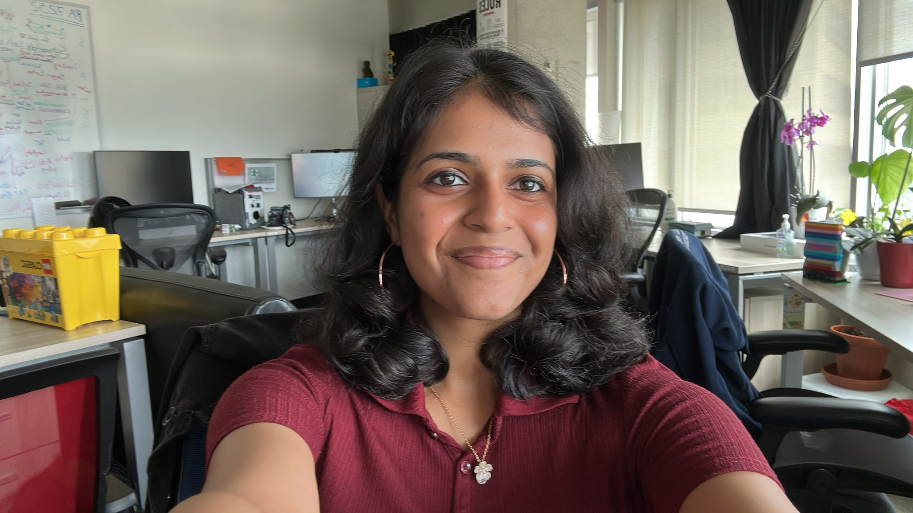

Pooja Ravi
Machine Learning Engineer · Toronto, Canada
I work on computer vision, generative models, and practical machine learning systems. My experience spans visual representation learning, multimodal pipelines, and model optimization.
I'm a graduate of the University of Toronto's MScAC program in AI and a Vector Scholar. At Q2 Software, I work on signature verification and document understanding.
My research interests include generative modeling, 3D vision, representation learning, and efficient models.

Publications
-
Proxy Pose
Ruihang Zhang*, Felix Taubner*, Pooja Ravi, Kiriakos N. Kutulakos, and David B. Lindell
-
 Attention Mechanism, Linked Networks, and Pyramid Pooling Enabled 3D Biomedical Image Segmentation
Attention Mechanism, Linked Networks, and Pyramid Pooling Enabled 3D Biomedical Image SegmentationPooja Ravi, S. Roy, I. Dutta, and K. Kottursamy
-